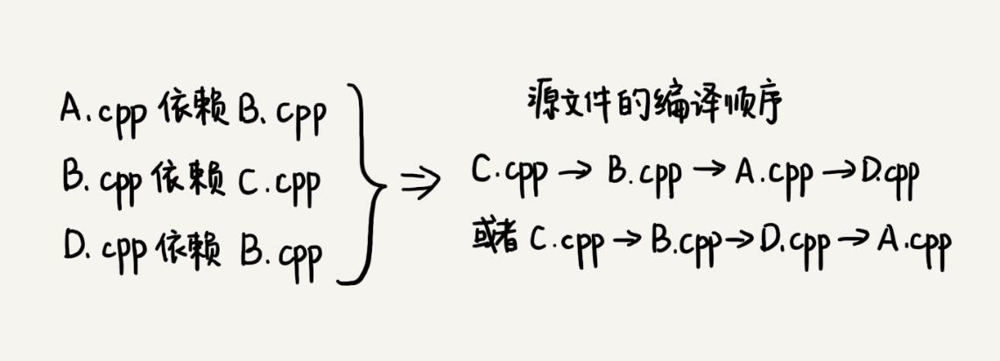
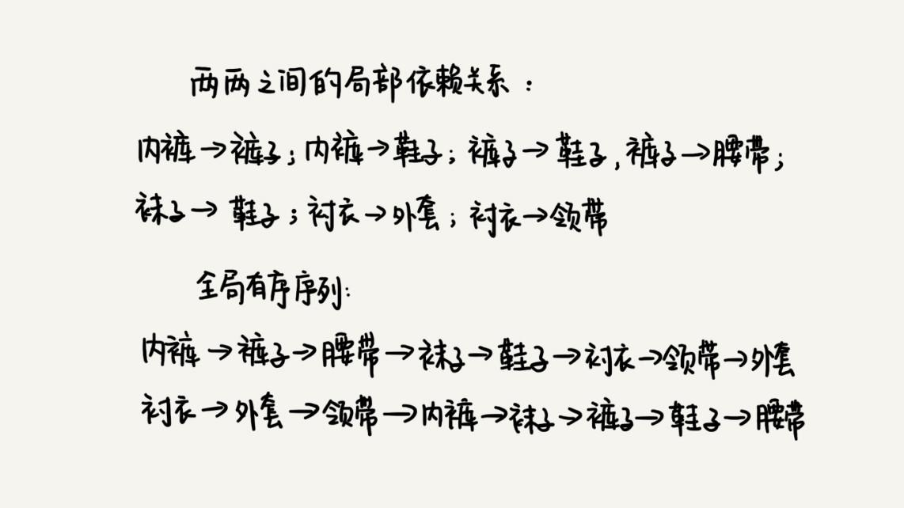

本文最后更新于：9 个月前
一个完整的项目往往会包含很多代码源文件。编译器在编译整个项目的时候，需要按照依赖关系，依次编译每个源文件。比如，A.cpp 依赖 B.cpp，那在编译的时候，编译器需要先编译 B.cpp，才能编译 A.cpp。
编译器通过分析源文件或者程序员事先写好的编译配置文件（比如 Makefile 文件），来获取这种局部的依赖关系。那编译器又该如何通过源文件两两之间的局部依赖关系，确定一个全局的编译顺序呢？

算法解析
这个问题的解决思路与“图”这种数据结构的一个经典算法“拓扑排序算法”有关。那什么是拓扑排序呢？这个概念很好理解，先来看一个生活中的拓扑排序的例子。
我们在穿衣服的时候都有一定的顺序，可以把这种顺序想成，衣服与衣服之间有一定的依赖关系。比如说，必须先穿袜子才能穿鞋，先穿内裤才能穿秋裤。假设现在有八件衣服要穿，它们之间的两两依赖关系已经很清楚了，那如何安排一个穿衣序列，能够满足所有的两两之间的依赖关系？
这就是个拓扑排序问题。从这个例子中，你应该能想到，在很多时候，拓扑排序的序列并不是唯一的。你可以下面的这幅图，有好几种满足这些局部先后关系的穿衣序列。

弄懂了这个生活中的例子，关于编译顺序的问题，你应该也有思路了。
拓扑排序的原理非常简单，重点应该放到拓扑排序的实现上面。
算法是构建在具体的数据结构之上的。针对这个问题，先来看下，如何将问题背景抽象成具体的数据结构？
可以把源文件与源文件之间的依赖关系，抽象成一个有向图。每个源文件对应图中的一个顶点，源文件之间的依赖关系就是顶点之间的边。
如果 a 先于 b 执行，也就是说 b 依赖于 a，那么就在顶点 a 和顶点 b 之间，构建一条从 a 指向 b 的边。而且，这个图不仅要是有向图，还要是一个有向无环图，也就是不能存在像 a->b->c->a 这样的循环依赖关系。因为图中一旦出现环，拓扑排序就无法工作了。实际上，拓扑排序本身就是基于有向无环图的一个算法。
public class Graph {
private int v; // 顶点的个数
private LinkedList<Integer> adj[]; // 邻接表
public Graph(int v) {
this.v = v;
adj = new LinkedList[v];
for (int i=0; i<v; ++i) {
adj[i] = new LinkedList<>();
}
}
public void addEdge(int s, int t) { // s 先于 t，边 s->t
adj[s].add(t);
}
}数据结构定义好了，现在来看，如何在这个有向无环图上，实现拓扑排序？
拓扑排序有两种实现方法，都不难理解。它们分别是Kahn 算法和DFS 深度优先搜索算法。依次来看下它们都是怎么工作的。
1. Kahn 算法
Kahn 算法实际上用的是贪心算法思想，思路非常简单、好懂。
定义数据结构的时候，如果 s 需要先于 t 执行，那就添加一条 s 指向 t 的边。所以，如果某个顶点入度为 0，也就表示，没有任何顶点必须先于这个顶点执行，那么这个顶点就可以执行了。
先从图中，找出一个入度为 0 的顶点，将其输出到拓扑排序的结果序列中（对应代码中就是把它打印出来），并且把这个顶点从图中删除（也就是把这个顶点可达的顶点的入度都减 1）。循环执行上面的过程，直到所有的顶点都被输出。最后输出的序列，就是满足局部依赖关系的拓扑排序。
Kahn 算法的代码实现如下，你可以结合着文字描述一块看下。不过，你应该能发现，这段代码实现更有技巧一些，并没有真正删除顶点的操作。代码中有详细的注释，就不多解释了。
public void topoSortByKahn() {
int[] inDegree = new int[v]; // 统计每个顶点的入度
for (int i = 0; i < v; ++i) {
for (int j = 0; j < adj[i].size(); ++j) {
int w = adj[i].get(j); // i->w
inDegree[w]++;
}
}
LinkedList<Integer> queue = new LinkedList<>();
for (int i = 0; i < v; ++i) {
if (inDegree[i] == 0) queue.add(i);
}
while (!queue.isEmpty()) {
int i = queue.remove();
System.out.print("->" + i);
for (int j = 0; j < adj[i].size(); ++j) {
int k = adj[i].get(j);
inDegree[k]--;
if (inDegree[k] == 0) queue.add(k);
}
}
}2. DFS 算法
实际上，拓扑排序也可以用深度优先搜索来实现。不过这里的名字要稍微改下，更加确切的说法应该是深度优先遍历，遍历图中的所有顶点，而非只是搜索一个顶点到另一个顶点的路径。
关于这个算法的实现原理，先把代码贴在下面，下面具体解释。
public void topoSortByDFS() {
// 先构建逆邻接表，边 s->t 表示，s 依赖于 t，t 先于 s
LinkedList<Integer> inverseAdj[] = new LinkedList[v];
for (int i = 0; i < v; ++i) { // 申请空间
inverseAdj[i] = new LinkedList<>();
}
for (int i = 0; i < v; ++i) { // 通过邻接表生成逆邻接表
for (int j = 0; j < adj[i].size(); ++j) {
int w = adj[i].get(j); // i->w
inverseAdj[w].add(i); // w->i
}
}
boolean[] visited = new boolean[v];
for (int i = 0; i < v; ++i) { // 深度优先遍历图
if (visited[i] == false) {
visited[i] = true;
dfs(i, inverseAdj, visited);
}
}
}
private void dfs(
int vertex, LinkedList<Integer> inverseAdj[], boolean[] visited) {
for (int i = 0; i < inverseAdj[vertex].size(); ++i) {
int w = inverseAdj[vertex].get(i);
if (visited[w] == true) continue;
visited[w] = true;
dfs(w, inverseAdj, visited);
} // 先把 vertex 这个顶点可达的所有顶点都打印出来之后，再打印它自己
System.out.print("->" + vertex);
}这个算法包含两个关键部分。
第一部分是通过邻接表构造逆邻接表。邻接表中，边 s->t 表示 s 先于 t 执行，也就是 t 要依赖 s。在逆邻接表中，边 s->t 表示 s 依赖于 t，s 后于 t 执行。为什么这么转化呢？这个跟这个算法的实现思想有关。
第二部分是这个算法的核心，也就是递归处理每个顶点。对于顶点 vertex 来说，先输出它可达的所有顶点，也就是说，先把它依赖的所有的顶点输出了，然后再输出自己。
这两个算法的时间复杂度分别是多少呢？
从 Kahn 代码中可以看出来，每个顶点被访问了一次，每个边也都被访问了一次，所以，Kahn 算法的时间复杂度就是 $O(V+E)$（V 表示顶点个数，E 表示边的个数）。
DFS 算法的时间复杂度之前分析过。每个顶点被访问两次，每条边都被访问一次，所以时间复杂度也是 $O(V+E)$。
注意，这里的图可能不是连通的，有可能是有好几个不连通的子图构成，所以，E 并不一定大于 V，两者的大小关系不确定。所以，在表示时间复杂度的时候，V、E 都要考虑在内。
总结引申
拓扑排序应用非常广泛，解决的问题的模型也非常一致。凡是需要通过局部顺序来推导全局顺序的，一般都能用拓扑排序来解决。除此之外，拓扑排序还能检测图中环的存在。对于 Kahn 算法来说，如果最后输出的顶点个数，少于图中顶点个数，图中还有入度不是 0 的顶点，那就说明，图中存在环。
关于图中环的检测，在递归那一篇讲过一个例子，在查找最终推荐人的时候，可能会因为脏数据，造成存在循环推荐，比如，用户 A 推荐了用户 B，用户 B 推荐了用户 C，用户 C 又推荐了用户 A。如何避免这种脏数据导致的无限递归？这个问题当时留给你思考了，现在是时候解答了。
实际上，这就是环的检测问题。因为每次都只是查找一个用户的最终推荐人，所以，并不需要动用复杂的拓扑排序算法，而只需要记录已经访问过的用户 ID，当用户 ID 第二次被访问的时候，就说明存在环，也就说明存在脏数据。
HashSet<Integer> hashTable = new HashSet<>(); // 保存已经访问过的 actorId
long findRootReferrerId(long actorId) {
if (hashTable.contains(actorId)) { // 存在环
return;
}
hashTable.add(actorId);
Long referrerId =
select referrer_id from [table] where actor_id = actorId;
if (referrerId == null) return actorId;
return findRootReferrerId(referrerId);
}如果把这个问题改一下，想要知道数据库中的所有用户之间的推荐关系，有没有存在环的情况。这个问题，就需要用到拓扑排序算法了。把用户之间的推荐关系，从数据库中加载到内存中，然后构建成上面的这种有向图数据结构，再利用拓扑排序，就可以快速检测出是否存在环了。
思考
用图表示依赖关系的时候，如果
a先于b执行，就画一条从a到b的有向边；反过来，如果a先于b，画一条从b到a的有向边，表示b依赖a，那上面的Kahn算法和DFS算法还能否正确工作呢？如果不能，应该如何改造一下呢？上面讲了两种拓扑排序算法的实现思路，
Kahn算法和DFS深度优先搜索算法，如果换做BFS广度优先搜索算法，还可以实现吗？欢迎留言和我分享。
本博客所有文章除特别声明外，均采用 CC BY-SA 3.0协议 。转载请注明出处！